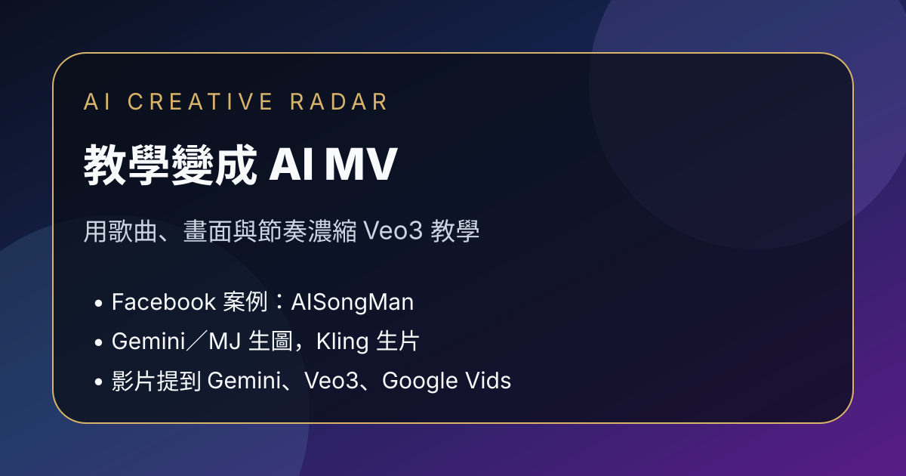

Facebook｜AISongMan：把 AI 教學做成 MV 的 Veo3／Google Vids 創作實驗

一句話摘要
AISongMan 分享一個把 AI 教學內容改寫成歌詞、歌曲與 MV 的實驗案例：用 AI MV 形式講解 Google Veo3 免費／低成本生成影片的方法。貼文補充實際 workflow 是用 Gemini 與 Midjourney 生圖、再用 Kling 生成影片；影片內容則提到 Gemini／Google One AI Premium 的 Veo3 限制，以及 Google Vids 在 Workspace 方案中的每日生成彈性。
來源脈絡
- 來源：Facebook「AISongMan」公開貼文。
- 分享連結：https://www.facebook.com/share/1JUhmWKTxC/?mibextid=wwXIfr
- Canonical：https://www.facebook.com/61591064259513/posts/122115967587368808/
- YouTube 影片：【2025年最新版】Google Veo3 無料でAI動画を大量に生成する裏技をAI MVで徹底解説！ 【日本初公開】#veo3 #無料 #ai
- YouTube 連結：https://www.youtube.com/watch?v=H4fWGZaQQnU
- 可見互動數：約 24 個心情、6 則留言、2 次分享。
- 注意：本文依 Facebook 公開貼文、留言補充與 YouTube 日文逐字稿整理；作者留言明確說明「介紹 Veo3，但影片製作不是用 Veo3」。
為什麼值得歸檔
這則貼文不是單純分享一支 AI MV，而是提出一個內容設計實驗：把教學腳本改寫成歌詞與歌曲，再用 MV 承載知識點。它把原本需要口述解釋的資訊壓縮到三分多鐘，用節奏、旋律、畫面與重複副歌來加強記憶點。
創作形式拆解
教學內容變成歌詞
- 先把教學重點拆成可唱的短句。
- 用副歌強化「訂閱、一起看 AI 未來」等頻道與品牌記憶。
- 把工具限制、方案差異、替代方法寫進歌詞，而不是另外用旁白補充。
MV 承載教學節奏
- 影片用音樂與畫面節奏降低教學資訊密度帶來的疲勞。
- 優點是更像內容作品，缺點是製作難度比一般教學影片高很多。
- 作者也提到要同時顧及教學是否清楚、歌詞是否自然、歌曲是否好聽、MV 畫面是否貼合內容。
實際 workflow
留言區有人詢問使用哪個 workflow，AISongMan 回覆：
- 用 Gemini 和 Midjourney 生圖。
- 再用 Kling 生成影片。
- 影片內容介紹 Veo3，但沒有用 Veo3 製作。
YouTube 影片內容重點
1. Gemini／Google One AI Premium 路線
- 歌詞提到可從 Gemini 網站登入 Google 帳號。
- 升級 Advanced／Google One AI Premium。
- 一個月可免費試用，但之後會進入付費制。
- 示例 prompt 是「雪の森を駆けるキツネ」（在雪森林奔跑的狐狸），產出電影感動態影像。
- 但歌詞也提醒 Gemini 路線仍有每日生成數與月度 credit 限制。
2. Google Vids 路線
- 歌詞後段提出 Google Vids 作為另一種方法。
- 若有 Workspace 方案，可在 Google Vids 內使用 Veo3 相關按鈕。
- 歌詞稱可以保存，並有「每天 20 本」的彈性，作者用它對比 Gemini 路線較自由。
- 實際可用額度與方案限制仍應以 Google Workspace／Google Vids 當下官方說明為準。
內容策略啟發
- 教學影片不一定只能做成講解、螢幕錄影或投影片，也可以做成歌曲與 MV。
- 高記憶點內容可以用音樂化、押韻、視覺節奏來降低學習門檻。
- AI 工具教學若變成娛樂內容，需特別注意不要讓資訊準確性被形式蓋過。
- 在分享 AI 創作案例時，最好像作者一樣補充實際 workflow，避免觀眾誤以為作品本身就是被介紹工具產出。
日文逐字稿重點摘錄
0:13 今日は話したいんだ
0:15 ちょっと特別なやり方
0:19 Veo3の動画がもっと作れるヒミツさ
0:25 Proプランなんていらない
0:27 でも使い方は知らない
0:31 YouTubeの噂じゃ
0:33 無料トライアルで始まるって
0:38 でもね現実は甘くない
0:40 1日3本までのライン
0:44 月に1000クレジット
0:46 足りないよ、本気なら
0:52 チャンネル登録して
0:55 未来を一緒に作ろう
0:58 AIと夢を重ねて
1:04 可能性ひらいていこう
1:29 まずは試してみてよ
1:31 Geminiサイト開いたら
1:35 Googleアカウントでログインして進んでいくの
1:41 「Advancedにアップグレード」
1:43 「Google One AI Premium」
1:46 一ヶ月は無料でOK
1:49 だけど、その後は課金制
1:53 プロンプトを入力して
1:56 「雪の森を駆けるキツネ」
1:59 シネマ風に動く映像
2:02 でも制限は消えないまま
2:45 でもね、本当はそれだけじゃない
2:48 Google Vidsという別の手段
2:51 Workspaceプランがあれば
2:53 隠れた力、使えるんだよ
2:57 ログインして右を見て
2:59 Veo3のボタン押してみて
3:03 保存もできて毎日20本
3:07 Geminiよりずっと自由！
原文整理
想跟大家分享一個我以前做過、到現在自己都覺得非常有趣的挑戰。
相信大家看過很多不同的教學影片，也看過很多 MV，但我當時突然有一個想法：可不可以把兩者結合起來，直接把「教學」變成一支 MV？
最後我真的把整個教學內容寫成歌詞、做成歌曲，再用 MV 的方式去呈現。出來的效果比我想像中有趣很多。它不但保留了教學內容，還可以把原本可能要講幾分鐘甚至更長的資訊，濃縮成一首歌的長度，用音樂、畫面和節奏去幫助理解。
以我有限的認知，當時在 YouTube 上應該也算是一種很少見的玩法。不過，這種形式雖然很有趣，但製作難度其實非常高。你要同時顧及教學內容是否清楚、歌詞是否自然、歌曲是否好聽，還要讓 MV 畫面配合內容，任何一個環節處理不好，整體都會變得很奇怪。
所以暫時還沒有太多精力再做第二支，但我相信以後一定會再玩。如果大家有興趣，可以去看看。這真的是一個我到現在都非常滿意的作品。
https://www.youtube.com/watch?v=H4fWGZaQQnU
#AI教學 #Veo3 #Gemini #AI影片 #AIMV
留言補充 workflow：用 Gemini 和 Midjourney 生圖，再用 Kling 生片。介紹 Veo3，但沒有用 Veo3。
原始連結
Facebook 分享連結：
https://www.facebook.com/share/1JUhmWKTxC/?mibextid=wwXIfr
Facebook canonical：
https://www.facebook.com/61591064259513/posts/122115967587368808/
YouTube：